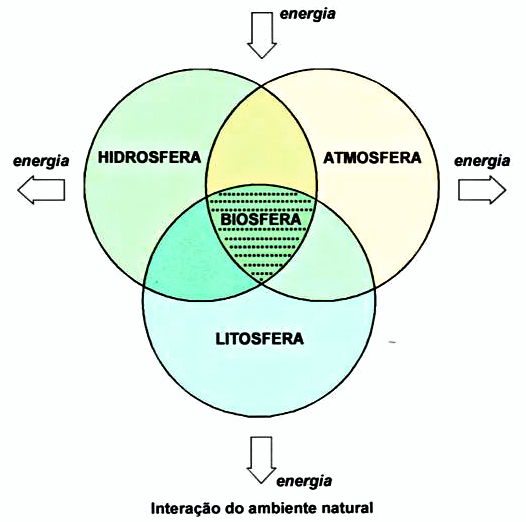

A palavra Ecologia deriva de duas palavras gregas: oikós = casa e logos = estudo, assim, significa literalmente o “estudo da casa” ou “estudo do ambiente”. Porém, é possível dividir a Ecologia em duas áreas: ecobiose (interação entre os seres vivos e o ambiente) e alelobiose (interação entre os seres vivos).
“É um ramo da Biologia que tem chamado a atenção, pois os desequilíbrios ecológicos provocados pela ação humana só serão evitáveis na medida em que se conheçam a estrutura e o funcionamento dos ecossistemas”.
A biosfera é o nível mais amplo estudado pela Ecologia, e designa as regiões do planeta que possuem os seres vivos. Está interligada intimamente com as camadas relacionadas aos componentes abióticos (sem vida) da Terra, que são:
Quando falamos em Ecologia, existem alguns conceitos essenciais para que ela seja estudada:
O lugar onde vivem determinadas espécies ou comunidades biológicas é o seu hábitat, caracterizado por suas propriedades físicas e abióticas. Cada espécie de ser vivo está adaptada a seu habitat, e o modo de interagir com os demais componentes do ecossistema, constitui seu nicho ecológico.
